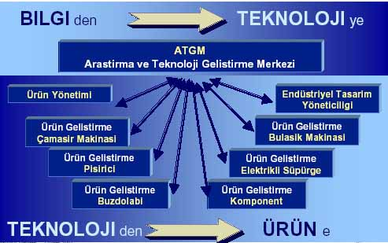
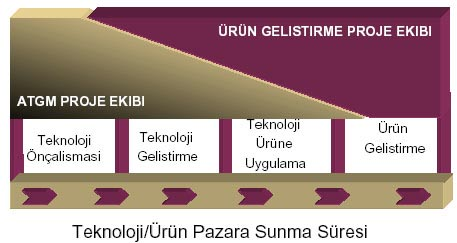

|
ARÇELIK
TEKNOLOJI GELISTIRME DENEYIMI:
Türkiye'de ar-ge ortaminin bütün zorluklarina karsin...
-
Gerekli Kültürü Olusturarak,
-
Ar-Ge Faaliyetlerini Evrensel Kurallarina Uygun,
-
Netice Alacak, Deger Katacak Sekilde,
-
Kendi Bünyesine Uydurarak Sürdürmek
21.
asirda ayakta kalmak isteyen endüstrilerin tek seçenegi olarak
gözükmektedir..
ATGM
ILKELERI
-
Ürün gelistirmenin yaninda "teknoloji gelistirme"
birimi.
-
Yazili misyon ve vizyon'a sahip olma.
-
Müsteri ilkesi.
-
Teslim edilecek ürünü tanimlanmis arastirma programlari.
-
Uzmanliga dayali altyapi.
-
Disiplinlerarasi projeler.
-
Projelerde Kalite, Zaman ve Bütçeye Uyum.
-
Raporu yayinlanmamis proje bitmis sayilmaz.
-
% 70 teknoloji üretme - % 30 gelecegi hazirlama
BASARILI BIR Ar-Ge IÇIN KOSULLAR
-
Üst Yönetim Destegi
-
Yeterli Kaynak
-
Optimum Zaman
-
Anahtar Konularda Yetismis Uzmanlar
-
Laboratuvar Altyapilari
-
Bilgisayar Donanimi ve Analiz Yazilimlari
-
Arastirma-Gelistirme Ortami
-
Sirket Kültür Degisimi
RAKIPLER
- "Uçma"
tuzagi
- "Kaybolma"
tuzagi
-
Teknolojiyi hazir elde etme aliskanligi
-
Hyperaktivite, sabirsizlik
-
Takdir edilmeme
-
Kartvizit kültürü


TEKNOLOJI
GELISTIRME'de PROJE ASAMALARI
- Proje
Olusturma (Ön Fizibilite Çalismasi)
- Proje
Yürütme ve Izleme
- Proje
Sonlandirma
PROJE
OLUSTURMA - ÖN FIZIBILITE GEÇIT <-1>
-
Tüm arastirmacilar proje önerebilirler.
-
Projenin yürütülmesi için gerekli bilgileri toplamak ve
"Teknik Fizibilite"yi ortaya koymak için zaman
ve kaynak açisindan sinirli ön çalismalari içerir.
-
Çalismanin sonunda derlenen bilgiler uzmanlarin ve ilgililerin
katildigi bir sunusta tartisilir. (Geçit<0>)
-
Projenin devamina karar verilirse, bundan sonraki asamanin
hedefi "Proje Kitabi"nin yayinlanmasidir.
PROJE KITABI
Proje
Kitabi, Proje Ekibi / Müsteri / ATGM Yönetimi arasinda bir
sözlesmedir.
- Projenin
amaç ve ürünlerini,
- Projede
uygulanacak yöntemi,
- Proje
planini ve kilometretaslarini,
- Gerekli
kaynaklari ve bunlarin onaylarini,
- Sirkete
getirecegi yararlari içerir.
PROJE
YÜRÜTME ve IZLEME
- Yetkelendirilmis
Proje Ekipleri.
- Iletisim
Plani:
- Proje
ekip içi iletisim
- Müsteri
ile iletisim
- Süreç
Sorumlusu ile iletisim
- Projenin
Bilgisayar Ortaminda Günlenmesi ve Izlenmesi.
PROJE
SONLANDIRMA
-
Projenin tüm hedeflerine ve çiktilarina ulasmasi ile projenin
kapatilmasi süreci baslar.
-
Bu süreçteki etkinlikler:
-
Raporlamalarin tamamlanmasi (Teknik ve idari)
-
Fikri haklarin yönetimi
-
Proje son degerlendirmesi
-
Proje ekibinin degerlendirmesi
-
Bilgi ve teknolojilerin transferi
-
Müsteri görüslerinin alinmasi
ÖNERILER
-
Teknoloji Gelistirme projeleri (gerektigi kadar) planlanmalidir.
-
Ara gözden geçirmeler için milestone'lar koyulmasi süreci
daha verimli kilmaktadir
-
Sürecin etkinliginin ve çiktilarin sürekli ölçümü dogru
yönlendirmede yardimcidir.
-
Planlanandan sapmalara Teknoloji Gelistirme projelerinde
hazir olunmalidir.
|